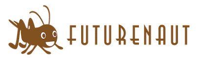

FEAUTURENAUT株式会社
どんな会社？
高崎経済大学発のベンチャー企業。
昆虫由来食品（コオロギ）にまつわる事業を展開。
「私たちは、昆虫由来食品の市場を創造し、環境問題や食糧危機のリスク低減に貢献する。」というミッションもと法人化。
原料の御販売、小売販売、製品開発、輸入、食育・昆虫食のイベントの開催、コンサルティング、メーカーの参入支援、マーケティング研究・心理分析研究なセキュリティ の業務を行っています。
vision
昆虫由来原料の市場創造に必要な基盤づくりをけん引する。
徹底した品質管理と安定的な市場流通を実現する。
value
食にまつわる問題を自分ごととして捉え行動する
公平、公正な社会の実現と発展に貢献する
人や地域との縁に感謝し、それらを大切にする
ヒト・モノ・コトを繋ぎ、豊かさを創造する
科学に基づき、正確さを追求する
変化を恐れず、自ら変化し続ける
どんなことをやるの？
・昆虫食にまつわる調査、記事執筆
・法人営業
・小売（イベントや店舗での販売）
・展示会出展
・新商品開発
・イベント企画、運営
・SNS広報
・ECサイト構築
・経理 など
どんなことが身につくの？
・プレゼンスキル
・BtoB、BtoCそれぞれの提案力
・ライティングスキル
・SNSマーケティングのスキル
どんな人が合うの？
・既存の考えに囚われず新しいことに挑戦できる（挑戦したい）人
・誰もやったことがないことに取り組んでみたい人
勤務地
・群馬県高崎市
・業務内容によってはリモート可能
シフト
希望に応じて
（2週間に一度のペースでウェブもしくは対面でMTGできればと思います。）
期間
希望に応じて
給与
無償インターン
その他
大学内のベンチャーを一緒に盛り上げてくれる人をお待ちしております。
お申し込み
少しでも興味をお持ちの方は、お手数ですが株式会社Makickerの公式ラインを追加していただいて、何でもお気軽にご相談ください。
その際、
＜お名前＞
＜大学＞
＜学年＞
の情報をいただけますとありがたいです！